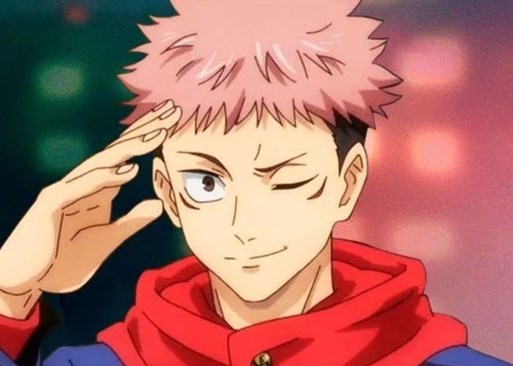
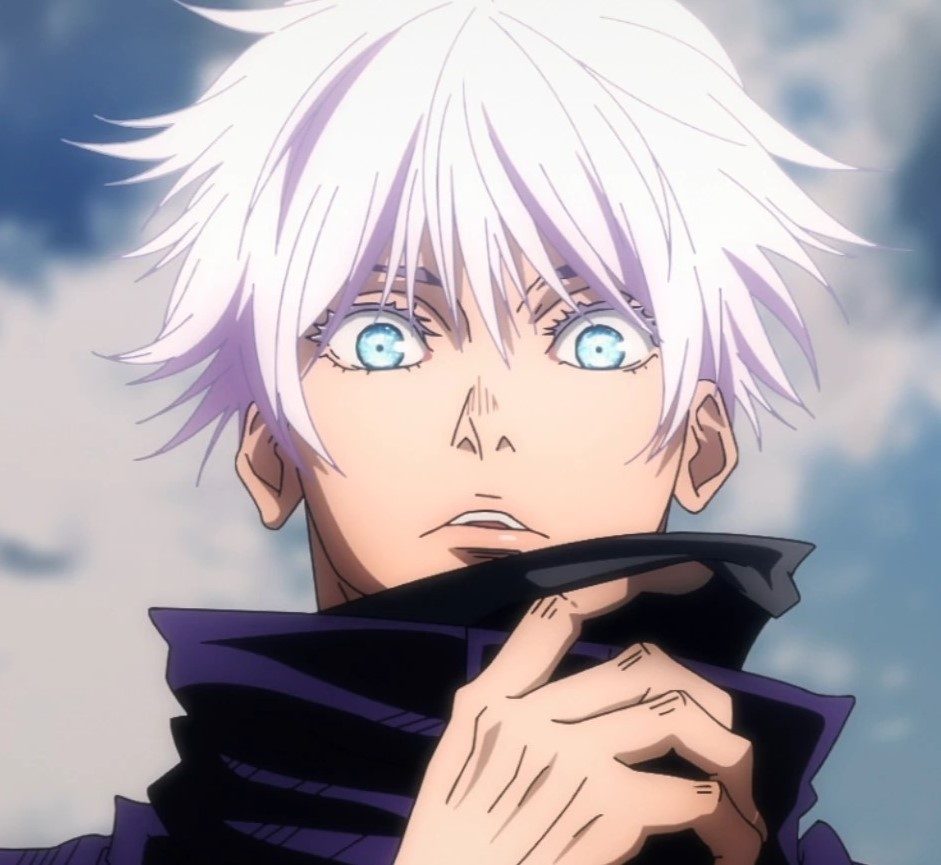
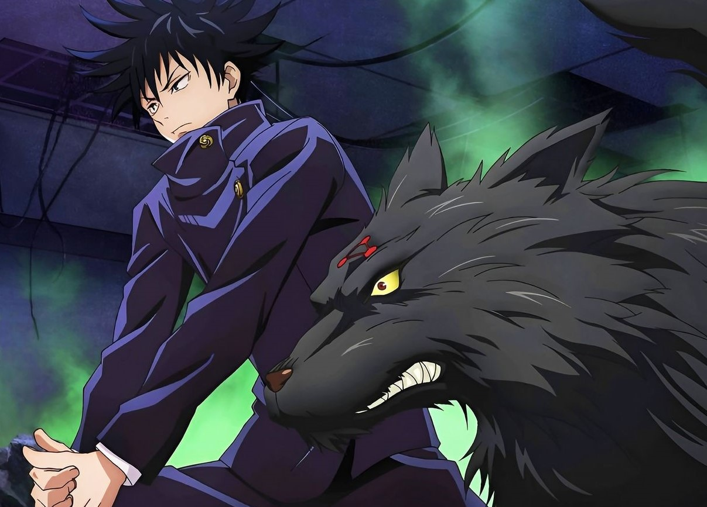
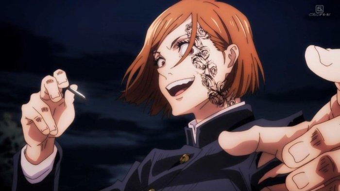

Itadori Yuji

Yuji dikenal sebagai sosok yang mempunyai pengendalian diri yang luar biasa. Tidak hanya bisa mengendalikan amarahnya, Yuji juga bisa mengendalikan Sukuna.
Kemampuan ini membuat Satoru Gojo terkagum-kagum saat pertama kali bertemu dengannya.
Yuji juga sangat loyal kepada dua teman sekelasnya, Megumi Fushiguro dan Nobara Kugisaki.
Ada banyak fakta menarik lain dari sosok Yuji Itadori dari Jujutsu Kaisen.
Gojo Satoru

Pecinta anime Jujutsu Kaisen pasti tak asing lagi dengan karakter Gojo Satoru. Tokoh ini cukup disenangi karena kepiawaiannya dalam bertarung.
Gojo Satoru termasuk salah satu karakter yang ditakuti dalam anime Jujutsu Kaisen. Ia merupakan penyihir terkuat, nyaris tak terkalahkan.
Meskipun begitu, Gojo Satoru memiliki kepribadian yang humoris di balik hidupnya yang misterius. Gojo Satoru bahkan masuk ke dalam karakter anime terganteng karena memiliki mata yang indah.
Baca artikel detikhot, "Yuk Kenalan Sama Gojo Satoru, Tokoh Fiktif di Anime Jujutsu Kaisen"
Megumi Fushiguro

Megumi adalah seorang pemuda yang relatif tinggi dan ramping dengan kulit putih dan mata hijau (m
ata biru tua dalam adaptasi anime) yang miring ke atas untuk menunjukkan kepribadiannya yang lebih keras d
an dingin. Ia memiliki rambut hitam bergaya unik dengan duri panjang yang mencuat ke segala arah di sekitar kepalanya,
menyerupai landak laut (menurut Hakari ). Saat pertama kali bertemu Megumi, Gojo memperhatikan kemiripannya d
engan ayahnya Toji Fushiguro dan Megumi sendiri memiliki fitur wajah yang mirip dan mata hijau yang sama dengan mendiang ayahnya.
Kugisaki Nobara

dalah karakter fiksi dalam anime dan manga Jujutsu Kaisen, yang dibuat oleh Gege Akutami.
Dia adalah tokoh tritagonis siswa tahun pertama dan penyihir jujutsu kelas tiga di Tokyo Jujutsu High belajar di bawah Satoru Gojo bersama Megumi dan Yuji.
Dia adalah siswa pindahan dari Morioka yang mempunyai sifat pemarah dan kurang ajar, dalam adaptasi animenya dia disuarakan oleh Asami Seto.
Nobara menggunakan palu khusus dan seperangkat paku dengan efisiensi mematikan dalam pertempuran,
dia juga mampu memanipulasi energi kutukan untuk menciptakan kekuatan